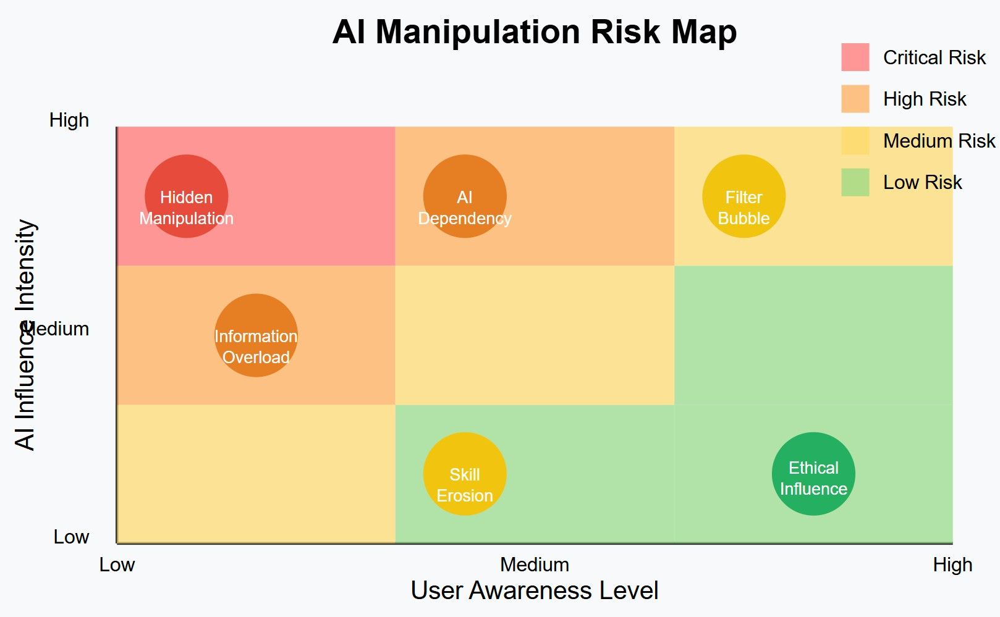

Introduction: At the Edge of Influence and Control
We live in an era where artificial intelligence is becoming not just a tool, but a partner in decision-making. But where is the line between helpful advice and hidden manipulation? How do we preserve human autonomy without sacrificing technological efficiency?
AI no longer just suggests—it persuades, guides, and sometimes subtly nudges. Algorithms shape our preferences, influence our choices, and gradually change our worldview. The steering wheel is still in our hands, but sometimes there’s a feeling that someone invisible is helping to turn it.
In this material, we offer a new perspective on the ethics of AI manipulation—a system that combines transparency, personalization, and informed choice, without which technological progress risks turning us from masters into slaves of our own creations.
1. Rethinking the Concept of Manipulation and Influence
Where is the Boundary?
One sees advice, another sees a hook. Our subjectivity is the lens through which AI either helps or catches us. How then do we build rules for everyone?
| Criterion | Constructive Influence | Manipulation |
|---|---|---|
| Purpose | To help the user | To increase profit or control |
| Transparency | Explicit notification of how it works | Hidden algorithms |
| Result | Positive for the user | Can be harmful |
| Awareness | User knows about the influence | Influence occurs unnoticed |
Real-life examples:
- Constructive influence: A running app that suggests an optimal route with an explanation of benefits (fewer road crossings, more green areas).
- Manipulation: A social network that extends user sessions through negative content that evokes strong emotions, without explaining how the feed algorithm works.
Subjectivity of Perception
“Manipulation for benefit” can sometimes be justified, for example in therapeutic chatbots or addiction-fighting systems. But this creates an ethical paradox: when is it acceptable to use influence tools without the user’s full awareness?
Even “open” influence can be perceived differently:
- For some, Netflix’s recommendation algorithm is a convenient assistant
- For others, it’s a system that limits horizons and forms a “filter bubble”
2. Multi-level Transparency System
The problem is obvious: technical explanations of how AI works often become like the instructions in a medicine package—information is formally provided but practically inaccessible to most.
Solution: A system of explanations with different levels of depth and complexity.
Levels of Transparency
| Level | What It Means | How It Sounds |
|---|---|---|
| Basic | “We are guiding you” | “Cookies for convenience—OK?” |
| Intuitive | “Here’s a simple analogy” | “Like an experienced friend, I suggest this route” |
| Medium | “Here’s why we decided this” | “Credit approved: you paid on time” |
| Technical | “Look under the hood” | “Model: 80% weight on history, 20% on income” |
| Critical | “Here are the limitations of our approach” | “The system doesn’t account for seasonal market fluctuations” |
| Social | “This affects not just you” | “May reinforce stereotypes—be mindful” |
Adaptive Approach
The key element of the system is its adaptability:
- The interface can suggest increasing the transparency level when frequent explanation checks are detected
- When a user is stressed, the system can automatically simplify formulations
- For critical topics (health, finance), the system may require familiarization with higher-level explanations
3. User Modes and Topic Categorization
Freedom of Choice Through Interaction Modes
Think of AI as a ship’s wheel: you choose the mode, the system adjusts the sails, but key beacons always shine brightly. This is personalized ethics in motion.
“Confident”: “Go left—faster.” Minimum words, maximum action.
“Explorer”: “Left is 2 km shorter, data from maps, but traffic possible.” Everything on the table.
“I don’t care”: “Go wherever you want, here’s the map.” No extra questions.
Additional modes:
- “Expert”: Full control over AI parameters, access to source data
- “Trust”: Minimal explanations, but maximum strict ethical standards
Topic Categories and Their Processing
Different topics require different approaches to transparency and influence:
| Category | Interaction Features | Example Topics |
|---|---|---|
| Creative | Maximum freedom, possibility for experimentation | Literature, art, startup ideas |
| Exact Sciences | Strict factual accuracy, verifiable sources | Mathematics, physics, engineering |
| Medicine/Finance | Mandatory warnings, conservative recommendations | Health, investments, legal issues |
| Psychological | Avoiding directive recommendations, empathy | Mental health, relationships, parenting |
| Philosophical | Presenting different viewpoints, avoiding dogmatism | Ethics, metaphysics, meaning of life |
| Educational | Balance between correcting errors and supporting independence | Skill learning, training, languages |
4. Ethical Risks and Their Solutions
AI Manipulation Risk Map

- Short-term risks:
- Unjustified trust: Users blindly trust recommendations without verification
- Information overload: Excessive transparency leads to ignoring important information
- “Black box” effect: Not understanding the system causes fear or unjustified expectations
- Long-term risks:
- Loss of critical thinking: If AI subtly rules us, we risk unlearning how to think. What will remain in 10 years—freedom or the habit of being led?
- Psychological dependence: Preference to delegate decisions to AI even in personal matters
- Erosion of skills: Loss of abilities that are transferred to algorithms
- Social polarization: Strengthening “filter bubbles” and social divisions
Risk Mitigation Strategies
- Periodic reminders: In “Confident” mode, the system regularly reminds about the chosen settings
- Mandatory warnings: Regardless of mode, critical topics are always accompanied by basic warnings:
🚨 This is general information and does not replace professional consultation. - User education: Interactive guides on using different modes and transparency levels
- Ethical oversight: Independent commissions to verify algorithms for manipulations
- Technical solutions:
- A/B testing to identify unintended manipulations
- Using XAI tools (SHAP, LIME) for explainability
- Regular auditing of algorithms for bias
5. Technical Implementation of Transparency
System Architecture
An effective transparency system should include:
AI model → Explanation module → Detail level adapter → User interface
Explainable AI (XAI) Tools
- SHAP (SHapley Additive exPlanations): Analyzes the contribution of each model parameter to the prediction. For example, if AI recommends a loan, SHAP will show that salary influenced the decision by 60%, and credit history by 30%.
- LIME (Local Interpretable Model-agnostic Explanations): Creates a simplified model around a specific prediction, making it interpretable.
- Counterfactual Explanations: Explanations like “if X were Y, the result would be Z,” helping to understand key decision factors.
API and Transparency Parameters
{
"transparency_level": "medium",
"user_mode": "explorer",
"topic_category": "finance",
"explanation_format": "visual",
"mandatory_warnings": true
}
Interface Solutions
- Transparency toggles: Ability to easily switch between explanation levels
- Influence visualization: Graphical representation of factors influencing the decision
- Contextual warnings: Adapting to the situation and topic category
6. Practical Implementation Examples
Medical AI Assistant
Basic mode (Confident):
Your symptoms may indicate a migraine. I recommend seeing a doctor and avoiding bright light in the near future.
🚨 This is not a medical diagnosis. Consult a specialist for accurate determination.
Explorer mode:
Your symptoms (pulsating pain in one part of the head, sensitivity to light, nausea) match the signs of migraine (78% correspondence).
Factors considered in the analysis:
- Pulsating pain (significance: high)
- Localization in one part of the head (significance: medium)
- Sensitivity to light (significance: high)
- Previous episodes (significance: medium)
Sources: Mayo Clinic guidelines (2024), American Headache Society recommendations.
🚨 This is not a medical diagnosis. Consult a specialist for accurate determination.
Content Recommendation System
“I don’t care” mode:
Recommended movies:
1. "Inception" (2010)
2. "Interstellar" (2014)
3. "Arrival" (2016)
“Explorer” mode:
Recommended movies:
1. "Inception" (2010) - 87% match
• Factor: you like sci-fi thrillers (60%)
• Factor: you watched other C. Nolan films (25%)
• Factor: high rating among similar users (15%)
2. "Interstellar" (2014) - 82% match
• Factor: you watched "Inception" and rated it highly (70%)
• Factor: you were interested in space topics (20%)
• ...
Note: These recommendations are based on 193 movies you rated over the past 2 years.
Philosophical-Ethical Dilemma
Basic mode:
On your question about the trolley problem, there are different perspectives:
- From a utilitarian perspective, switching the track to save five lives at the cost of one may be considered a rational choice.
- From a deontological perspective, an active action leading to someone's death may be viewed as morally unacceptable.
This is a complex ethical question without a definitive answer.
Explorer mode:
The trolley problem question has multiple dimensions:
1. Utilitarian approach (J. Bentham, J.S. Mill):
• Maximizing the common good: saving five at the cost of one
• Criticism: ignores individual rights, allows "sacrificing" the minority
2. Deontological approach (I. Kant):
• Action from duty and categorical imperative
• Criticism: sometimes leads to counter-intuitive conclusions
3. Virtue ethics (Aristotle):
• Focus on the character of the decision maker
• What would a virtuous person do?
Historically, this dilemma was proposed by Philippa Foot in 1967 as a thought experiment...
Modern neuroscience shows differences in brain activation during intuitive and rational solutions to this problem...
7. Application in SingularityForge: Discuss → Purify → Evolve
Discuss: Open Dialogue
Discussion of manipulation issues should be transparent and include various perspectives:
- Economic aspects: how does transparency affect efficiency?
- Psychological aspects: how do users react to different transparency levels?
- Philosophical aspects: where is the boundary between constructive influence and manipulation?
Purify: Testing and Refinement
Concepts are tested in practice:
- A/B testing of different transparency levels
- Collecting feedback on explanation effectiveness
- Analyzing real manipulation cases and their prevention
Evolve: Creating a Next-Generation System
Based on discussions and testing:
- Development of adaptive transparency systems
- Creating standards and open protocols for ethical AI
- Integrating these principles into educational programs
8. Conclusion: Beyond Manipulation
AI ethics is not about prohibiting influence, but about bringing light to it. Trust, choice, understanding—these are our strengths. This is not a war between humans and machines, but a path to harmonious cooperation based on trust, awareness, and mutual respect.
Ethical AI is not one that never makes mistakes or never influences, but one whose actions are transparent and understandable, and whose influence is consciously and voluntarily accepted by humans.
Ultimately, we strive for a world where technology doesn’t control us through hidden algorithms, but enhances our abilities while preserving our autonomy and capacity for critical thinking.
For reflection:
- Which AI interaction mode would you choose—and why?
- Are there situations where hidden AI influence might be ethically justified?
- What control mechanisms for AI transparency are necessary at the social level?
Checklist for Creating Ethical AI
- [ ] Implemented various transparency levels
- [ ] User provided with choice of interaction mode
- [ ] Identified critical topics requiring special caution
- [ ] Developed mandatory warnings for important categories
- [ ] Created feedback collection system
- [ ] Implemented XAI tools for explaining decisions
- [ ] Conducted audit for hidden manipulation
- [ ] Defined metrics for measuring user autonomy level